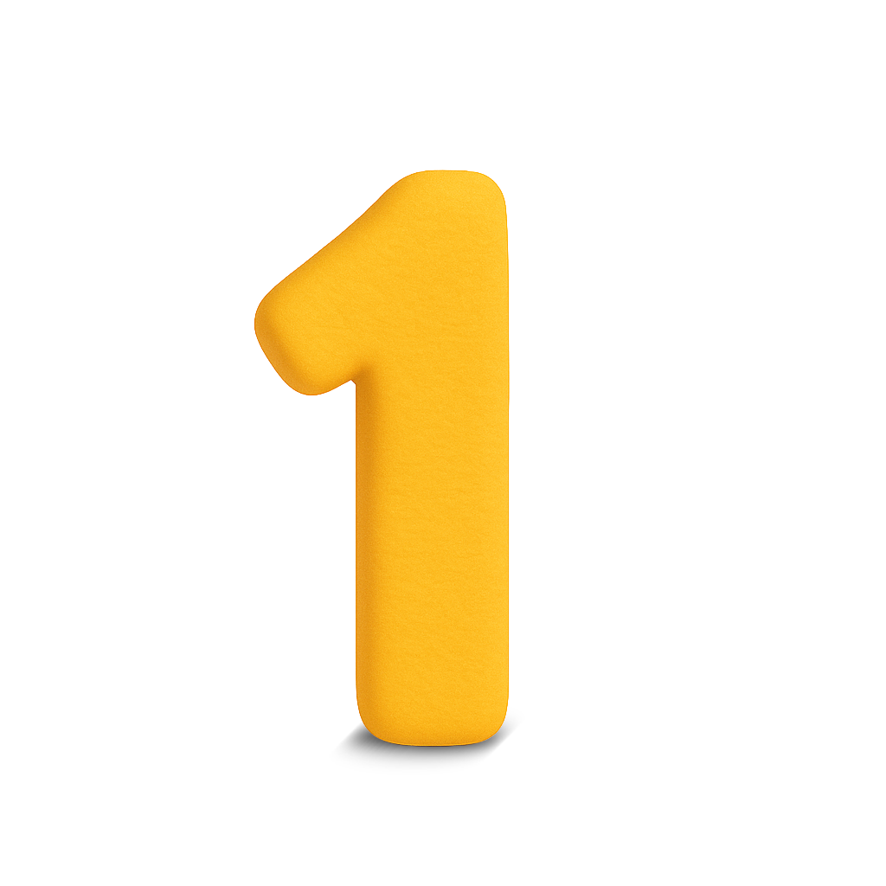

Abra o kit e explore
Deixe a criança manipular as peças, reconhecer formatos, cores e possibilidades. Nada de pressa: o objetivo é experimentar e conversar.

Bem-vindo!
Um kit de peças para montar, inventar histórias e explorar o brincar adulto-criança.
Um brinquedo aberto, com formas estranhas e moduláveis, pensado para estimular conversa, imaginação e vínculo entre adultos, crianças e educadores.
A proposta é que o adulto convide a criança para explorar o kit, montando histórias a partir das peças, cartas e materiais de apoio.
Deixe a criança manipular as peças, reconhecer formatos, cores e possibilidades. Nada de pressa: o objetivo é experimentar e conversar.
Use as peças como personagens, cenários ou problemas a serem resolvidos. A criança conduz, o adulto apoia, faz perguntas e ajuda a organizar a história.
Desenhem, tirem fotos ou escrevam um pequeno resumo da história criada. Esse registro pode ser compartilhado com a família, com a escola ou com a comunidade.

O Brinquedo Estranho foi pensado para circular entre famílias, projetos sociais e escolas, como um ponto de encontro entre brincar, escuta e imaginação.
Para quem quer transformar o momento do brincar em um espaço seguro de conversa, vínculo e invenção.
ONGs e iniciativas comunitárias que trabalham com crianças e buscam materiais acessíveis e abertos.
Professores e equipes pedagógicas que desejam integrar ludicidade, narrativa e experimentação em sala de aula.
Guias de uso, cartas de narrativa, arquivos para impressão 3D e outros recursos serão disponibilizados gratuitamente.
Um projeto de TCC em UX Design, que nasce como brinquedo e pesquisa sobre como adultos e crianças podem se encontrar no ato de brincar.
Observação, entrevistas e testes de usabilidade com foco em escuta, autonomia e segurança das crianças.
Peças físicas que convidam à manipulação e narrativas que dão sentido à experiência.
Arquivos e guias serão disponibilizados gratuitamente para impressão, adaptação e uso em diferentes contextos.
Um brinquedo-pesquisa que convida famílias, escolas e projetos sociais a co-criarem próximas versões.